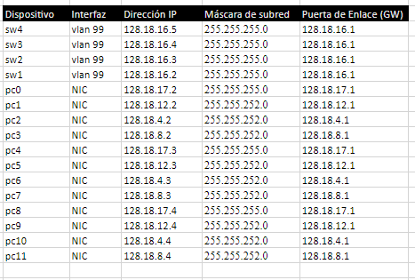
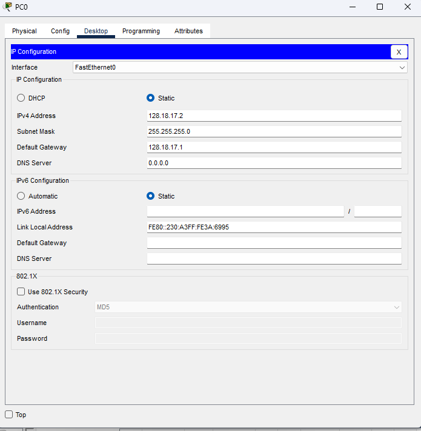
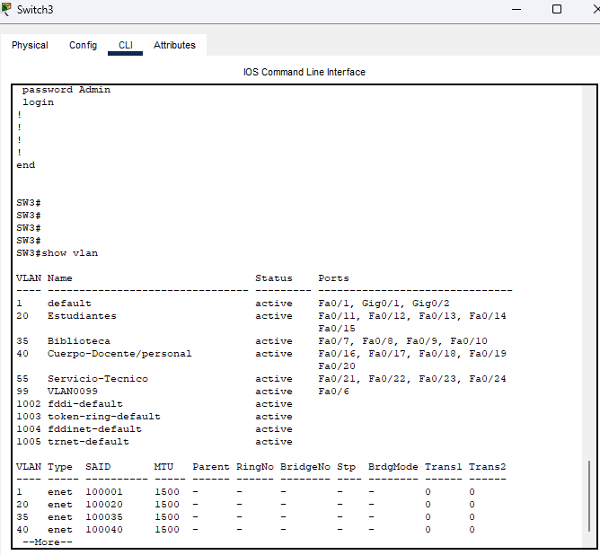
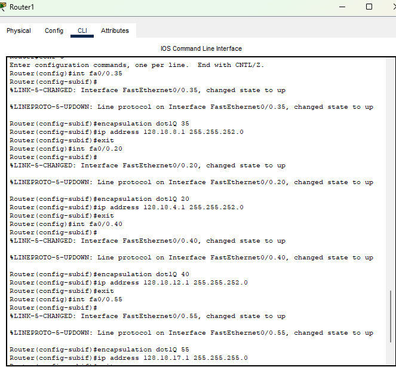
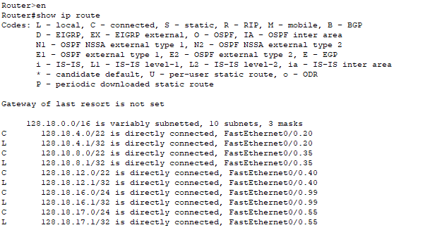
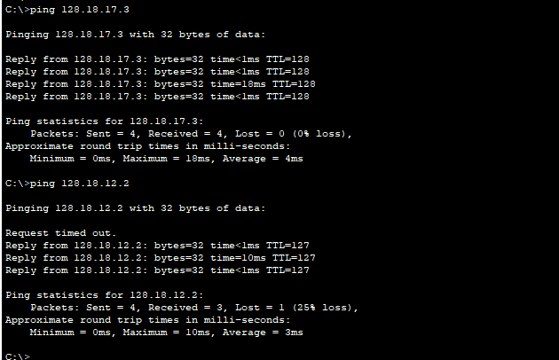
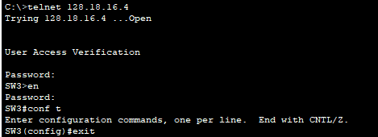
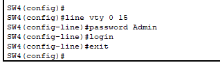
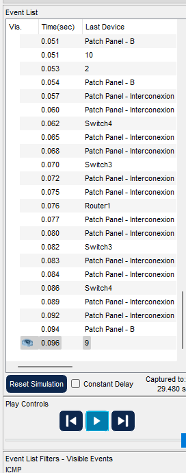
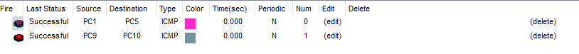

For the development of this practice, use the structured cabling of the Network Room and perform the following tasks for the logical network topology in Figure 1: 1. Mount the logical topology in the emulated network room (physical topology) in CISCO Packet Tracer. Use the CISCO 2960 Series Switch and Cisco 2811 Router models.


2. The network administrator sets up the IP address space 128.10+X.0.0/16 (where X is your workgroup number, which is added to the octect. Review the Annex section of LA#2). The administrator asks you and your team to propose a network division proposal for the subnets presented in the network topology (Figure 1), taking into account the network information in Table 1, where VLANs 35, 20 and 50 require 950 clients each, while VLANs 99 and 55 require 254 clients each. 3. Once the division into subnets has been proposed, build the addressing table of the entire network topology, taking into account the following structure check method page 
4. Perform the basic configuration of the CISCO switches and routers according to the procedure or list of steps proposed in the recommended readings. Manually assign each of the network interfaces the IP addresses according to the addressing table built in the previous step. 5. Verify that IP addresses have been correctly assigned to each of the PCs' NIC interfaces. Which TCP/IP command should you use? Capture the verification performed. For pc we use the ip config tab in desktop For switches we use show running-config
6. Create and configure the VLANs according to the procedure developed in class and according to the VLAN assignment shown in Table 1. 7. Verify that the VLANs have been created and configured correctly. Which CISCO command should you use? Capture the verification performed.
we use command "show vlan"
8. Configure interVLANs communication in the network topology. On which interface of the router should it be configured? How many subinterfaces must be created and configured? What encapsulation protocol should be configured?
the interface that is configured is the one that the switch is connected to which is Fa0/0. there should be 5 subinterfaces one for each vlan. the encapsulation protocol used is dot1Q.
 9. Verify that there is connectivity between the PCs belonging to the same VLAN. What TCP/IP commands should you use? Do the PCs have connectivity to your gateway? Because? Is there connectivity between PCs belonging to different VLANs? Because? Capture the verification performed.
we use the ping commnad to check the connectivity between the pcs as we ping there ip address. there is conenctity to the gateway as the default gateway is connected to the router. and yes there is conectivity between the diffrent vlans thought there is some loss of data as there is a 25% loss the reason there is comunication is through the router and trunk ports
10. Verify that it is possible to Telnet from a PC to the other switches and to the router. What TCP/IP command should you use? Capture the verification performed. there is telnet on the network we check this by using the command "telnet" and the ping of the switch or router we want to telnet the password for telnet is "Admin" and one for the switch is "test"
 11. Analyze the traffic generated on the LAN by verifying connectivity from one PC to another and from one PC to the gateway. Additionally, between two PCs belonging to different VLANs. Justify your analysis using captures with the Cisco Packet Tracer simulator (simulation view). from the traffic seen we can see that most of the time the data takes awhile do to the amount of devices it needs to go through such as the switches and patch panels that is the main reason it takes the time it does but it is show that by the end the data does arrive
 